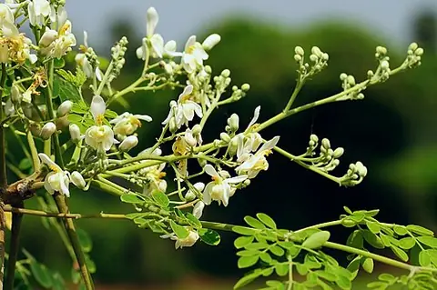

Breads & rice · Popular in West coast and Deccan
Moringa thepla
Moringa thepla is made with wild moringa, a favourite in West coast and Deccan.

How do you make moringa thepla?
Soft flatbreads of wheat and besan with moringa leaves and spices.
Wild ingredients
- Moringa (Moringa oleifera): in season all year round
Watch the recipe

Video: Your Food Lab on YouTube